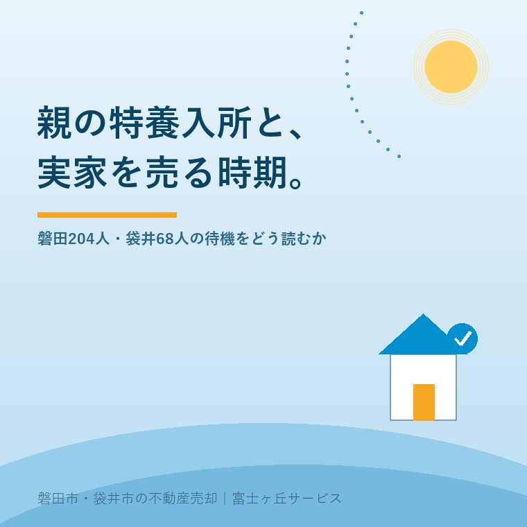

2026年8月29日｜カテゴリ：介護と実家／売却タイミング

この記事の要点
Q. 親の特養の順番が回ってきそうなんですが、実家はそのタイミングで売ればいいですか。
A. 入所日に売却日を合わせる必要はありません。静岡県公表の入居希望者は磐田市204人・袋井市68人で5年連続の減少。ただし磐田の204人のうち在宅で6か月以内は60人です。名義と登記の確認だけ先に、売るかどうかは後で決めて構いません。
磐田市・袋井市・森町では、介護施設の運営から不動産事業を始めた富士ヶ丘サービスのような「介護×不動産」専門の会社に相談するという選択肢があります。
「特養の順番が回ってきたら、実家を売ります」。この言い方を、私は年に何度も聞きます。順番が来る日を売却のスタートラインにしている、という意味です。気持ちは分かります。入所が決まらないうちに家を手放すのは、退路を断つように感じられるからです。
ただ、その日程の組み方だと間に合わないことがあります。この記事は2026年8月29日時点で、静岡県健康福祉部が公表している「特別養護老人ホームの入居希望者の状況（令和7年4月1日時点）」と、その市町別集計・年度推移の資料を確認して書いています。施設入居後に止まる実家の話は「いつか戻る」で止まる実家にも書きました。
静岡県は2026年2月19日に「特別養護老人ホームの入居希望者の状況」を公開しました。基準日は令和7年4月1日です。県の用語は「入所申込者」ではなく「入居希望者」で、市町別の内訳も同時に出ています。磐田市と袋井市を並べます。
| 磐田市 | 袋井市 | 静岡県計 | |
|---|---|---|---|
| 施設数 | 15 | 6 | 311 |
| 定員 | 876人 | 470人 | 19,623人 |
| 入居希望者（実人数） | 204人 | 68人 | 4,487人 |
| うち在宅で6か月以内の入居希望 | 60人 | 12人 | 1,513人 |
| うち入居の必要性が高い | 23人 | 6人 | 629人 |
| 定員に対する希望者の割合 | 23.3％ | 14.5％ | 22.9％ |
静岡県「特別養護老人ホームの入居希望者（令和7年市町別集計）」（基準日 令和7年4月1日／2026年2月19日公開／2026年8月29日確認）。「定員に対する希望者の割合」は大石が計算した値で、県が公表しているものではありません。
不動産屋の癖で、まず割り戻します。磐田市は1施設あたり13.6人、袋井市は11.3人が待っている計算です。定員に対する希望者の割合は、磐田23.3％に対して袋井14.5％。1.6倍の開きがあります。
供給量そのものは、両市でほとんど変わりません。磐田市の人口163,224人（令和8年7月末）で定員876人を割ると人口1万人あたり53.7床、袋井市の人口87,007人（令和8年8月1日）で470人を割ると54.0床。ベッドの数は人口比でほぼ同じなのに、待っている人の割合だけが磐田で高い。ざっくりの割り戻しで、しかも人口は令和8年、特養の数字は令和7年4月1日時点なので時点がずれています。それでも差の大きさは、時点のずれで説明できる幅を超えています。なぜこうなるのか、私は説明できていません。
磐田市の204人という数字は、そのまま「204人が入所を待って自宅で困っている」という意味ではありません。県の調査には、もう1段細かい区分があります。調査時点で在宅にあり、6か月以内の入居を希望する方が磐田市60人、袋井市12人。入居の必要性が高いとされた方が磐田市23人、袋井市6人です。
割合にすると、磐田市の204人のうち在宅で6か月以内は29.4％、必要性が高いとされたのは11.3％。袋井市はそれぞれ17.6％、8.8％です。残りの7割は、すでに病院や他の施設にいる方、あるいは半年より先を見て申し込んでいる方が混ざっています。県はその内訳を公表していないため、どちらがどれだけかは未確認です。
ここが実家の話に効いてきます。順番を待つ204人の列に親が並んでいるという理解と、半年以内に動く可能性のある60人の中にいるという理解では、家の段取りの緊急度がまるで違います。どちらなのかは、県の統計ではなく、申し込んだ施設と担当のケアマネジャーにしか分かりません。
静岡県全体の入居希望者は、令和2年度をピークに減り続けています。県が公表している推移は次のとおりです。
| 基準年度 | 入居希望者（要介護1〜5・実人数） |
|---|---|
| 平成30年度 | 5,640人 |
| 平成31年度 | 6,086人 |
| 令和2年度 | 6,104人（ピーク） |
| 令和3年度 | 5,815人 |
| 令和4年度 | 5,462人 |
| 令和5年度 | 4,926人 |
| 令和6年度 | 4,786人 |
| 令和7年度 | 4,487人 |
静岡県「特別養護老人ホームの入居希望者数の推移（平成30年度以降）」（2026年8月29日確認）。各年度4月1日時点。
県の要旨は、この傾向をはっきり書いています。
「令和７年４月１日時点で、特別養護老人ホームへの要介護３以上の入居希望者の実人数は 4,279 人、前回調査比 256 人減であった。要介護度１～５の入居希望者の実人数は令和２年度から５年連続で減少している。」
「調査時点で在宅にあり、６か月以内に入居を希望する方（要介護３以上）は 1,441 人、前回調査比 204 人減であった。」（静岡県「特別養護老人ホームの入居希望者の状況」2026年2月19日公開／2026年8月29日確認）
令和2年度の6,104人から令和7年の4,487人まで、5年で1,617人、26.5％減りました。もう1つ、前年（令和6年）の調査資料には参考値が載っていました。令和5年度中に特別養護老人ホームを退所した方は、県全体で6,406人。県内の定員19,623人に対して32.6％にあたります。入居を希望している4,487人より、1年間に退所する人数のほうが多いという数字です。この参考値は令和7年版の資料には載っていないため、最新年度の数字は未確認としておきます。
減っている理由を、私は断定できません。サービス付き高齢者向け住宅や介護付有料老人ホームなど選択肢が増えたこと、要介護3以上という入所要件、在宅サービスの組み合わせ方。どれも関係していそうですが、県の資料に理由の分析は書かれていません。
特別養護老人ホームの部屋には、大きく分けて多床室（4人部屋などの相部屋）とユニット型個室があります。今回の静岡県の資料3本を確認しましたが、「ユニット」「多床」「個室」という語はいずれの資料にも出てきません。入居希望者が、どの種類の部屋を希望しているのかは公表されていません。空床数も同様です。
県内で室型別に近いデータを出しているのは、県の調査対象外である静岡市だけです。静岡市は施設別の一覧に「定員」「内 ユニット型個室定員」「入所申込者数」「空床数」の列を持っています。ただし申込者数と空床数は施設単位の合計で、部屋の種類別には分かれていません。磐田市と袋井市については、室型別のデータも空床のデータも公表されていません。
ここからは県の公表資料ではなく、私の見方です。特養の待機と言われているものは、主に多床室、つまり4人部屋などの相部屋の待機です。ユニット型は空いています。介護施設を運営する側として現場で聞いている話であって、統計の裏付けがあるわけではありません。県が室型別を公表していない以上、これは私の観測です。
説明のつく理由はあります。費用です。多床室とユニット型個室では、同じ特別養護老人ホームでも自己負担が大きく変わります。負担限度額認定の対象になるかどうかも含めると、年間60万円から100万円規模の差が出ることも珍しくありません。負担限度額認定と売却のタイミングに、居住費の区分と金額を並べました。年金の範囲で収まるのは多床室で、ユニット型は足が出る。だから多床室に希望が集中する。これは制度の設計から見ても筋が通っています。
唯一、近いところまで公表しているのが静岡市の施設別一覧です。全室ユニット型の施設では申込者が1桁から20人台にとどまり、空床が10床ある施設もあります。一方、多床室を持つ大規模施設では申込者が100人を超え、200人台の施設もあります。数字を並べると、私が現場で聞いている話と方向は合っています。ただし静岡市の一覧でも申込者数は部屋の種類別に分かれておらず、施設単位の合計です。傾向としてそう読めるところまでが限界で、これを磐田市・袋井市に当てはめられるとまでは言えません。
実家の話に引き付けると、ここが効きます。「特養は何年も待つらしい」という前提で家の予定を組むと、部屋の種類を変えた途端に前提が崩れます。ユニット型なら早く入れる可能性があり、そのぶん費用が上がる。費用を家の売却でまかなうという話になれば、売却の時期も変わります。逆に多床室にこだわるなら、待つ期間は長く、実家は空き家のまま年を越します。入所の話と家の話は、部屋の種類のところで結び付いています。
実家の売却は、決めてから現金になるまで数か月かかります。売り出しから引渡しまでの標準的な流れは実家売却の段取りと期間にまとめましたが、名義の確認、相続登記の要否、境界の確認と測量、残置物の処分が前段に必要です。測量は隣地の立会いが要るため、1か月で終わる保証はありません。
ここに、入所日という不確定な日付を起点として置くとどうなるか。入所の連絡は、施設から急に来ます。連絡が来てから家の準備を始めると、家が空になるのは半年から1年先です。その間、電気も水道も止まった家が1軒残ります。
逆の順番も勧めません。入所が決まっていない段階で家を売り切ってしまうと、在宅に戻る選択肢が消えます。私が言いたいのは売れということではなく、「決める」と「調べる」を分けてくださいということです。調べるほうは、入所の可否と関係なく今日から進められます。
そして、待てない事情が1つだけあります。親名義のまま判断能力が下がると、実家は売れなくなります。成年後見の手続きを経ないと契約ができなくなるためで、これは順番待ちの都合とは無関係に進行します。親が認知症になると実家は売れないのかに、元気なうちにできる備えを書きました。特養の順番は待てますが、この期限は待ってくれません。
ここからは統計ではなく、宅地建物取引士としての私の判断です。体験談ではなく、数字と制度を読んだうえでの考えとして書きます。
入所の申込みをした時点で、実家の名義と登記だけは確認しておいてください。売る・貸す・持ち続けるのどれを選ぶにしても、必ず要る作業だからです。名義が親単独なのか共有なのか、相続が1代分飛んでいないか、建物が未登記でないか。ここが片付いていれば、入所の連絡が来てから動き出しても間に合います。
片付けのほうは、少し早めに始めることを勧めています。家財の処分は市の粗大ごみ収集を使うと予約が1か月先になることがあり、量が多い実家では月をまたぎます。磐田市の粗大ごみ、実家1軒は搬入と予約どちらが得かに料金と待ち日数を整理しました。入所が決まってから片付け始めると、家財だけで2か月使います。
そのうえで、売る時期は決めなくて構いません。今日、結論を出す必要はありません。特養の入居希望者が5年連続で減っているという事実は、「早く売らないと」の理由にはなりません。むしろ、施設の選択肢が以前より広がっているという読み方のほうが実態に近いと私は思っています。
この3つは、売ると決めていなくてもできます。1つ目と3つ目はケアマネジャーへの1本の電話で済み、2つ目は法務局の窓口で数百円です。3つとも、後でどの選択をしても無駄になりません。
私たちが目指しているのは「高く売る」だけではなく、「家族が困らない売却」です。介護施設の運営から不動産事業を始めた会社なので、入所の段取りと家の段取りが同じ机の上にある状態を、日常的に見ています。入所の話が動き出したときに、家のほうで何を先に確認しておけばよいのか。その整理の道具として、ふじがおか実家カルテを用意しています。
ふじがおか実家カルテ｜売ると決める前に、調べるほうを終わらせます
入所が決まってから慌てないための、1枚です。
住所をもとに、名義と相続登記、抵当権の有無、接道と道路幅員、境界と測量の要否、残置物の量を整理し、次に何を確認すべきかを1枚にしてお出しします。作成料0円・入力約1分。申込みだけで売却依頼にはなりません。
入所の見込みは施設と担当のケアマネジャーへ、介護費用の自己負担は市の担当課または地域包括支援センターへ、相続登記と名義の判断は司法書士へ、譲渡所得と控除の判断は税理士へご確認ください。
静岡県「特別養護老人ホームの入居希望者の状況」（令和7年4月1日時点、2026年2月19日公開）によると、磐田市の入居希望者は実人数204人です。市内の施設は15か所、定員は合計876人。204人のうち、調査時点で在宅にあり6か月以内の入居を希望する方は60人、入居の必要性が高いとされた方は23人でした。袋井市は6施設・定員470人に対し希望者68人、在宅で6か月以内が12人です。
そう単純には言えません。静岡県全体の入居希望者は令和2年度の6,104人から令和7年4月1日の4,487人まで5年連続で減っていますが、県の調査には部屋の種類別の区分がなく、どの部屋がどれだけ空いているかは公表されていません。希望する施設と部屋の種類によって待ち時間は大きく変わります。入所の見込みは、申し込む施設と、担当のケアマネジャーに直接ご確認ください。
入所日に売却日を合わせる必要はありません。売却には名義の確認、相続登記の要否、境界と測量、残置物の処分で数か月かかり、入所の決定を待ってから動き出すと空き家のまま冬を越すことになりがちです。一方で、親名義のまま判断能力が下がると売却そのものができなくなります。名義と登記の確認だけは入所を待たずに進め、売る・貸す・持ち続けるの判断は後から決めて構いません。個別の判断は司法書士および税理士へご確認ください。

この記事を書いた人：大石浩之（宅地建物取引士）
磐田市・袋井市・森町で「介護×相続×空き家」に特化した不動産売却支援を行う富士ヶ丘サービスの代表取締役・宅地建物取引士。介護施設の運営から不動産事業を始めた経験をもとに、売主とご家族が困らない売却を一件ずつお手伝いしています。プロフィール
本記事は2026年8月29日時点で静岡県および磐田市・袋井市が公表している情報に基づく一般的な整理であり、特定の方の入所見込みや、特定の物件の売却時期を判断するものではありません。定員に対する割合、人口1万人あたりの定員、施設あたりの希望者数は大石が計算した概算で、県が公表している数値ではありません。人口は令和8年の値、特別養護老人ホームの数値は令和7年4月1日時点で、基準時点が異なります。部屋の種類ごとの待機・空床については県が公表しておらず、本文中の見方は現場での観測であって統計の裏付けはありません。入所の可否と時期は施設および担当のケアマネジャーへ、介護費用の自己負担は市の担当課または地域包括支援センターへ、相続登記は司法書士へ、税務は税理士へ、売却の段取りは当社までご相談ください。
磐田市・袋井市・森町の実家じまい・相続空き家の相談
入所が決まる前に、家のほうを調べておきます
「まだ売ると決めていない」という段階で構いません。名義と登記、境界、家財の量だけ先に整理します。カルテ申込またはLINEで状況を送ってください。
富士ヶ丘サービス株式会社／静岡県磐田市見付5789番地1／TEL:0538-31-3308／静岡県知事 (2) 第14083号／代表取締役・宅地建物取引士 大石 浩之